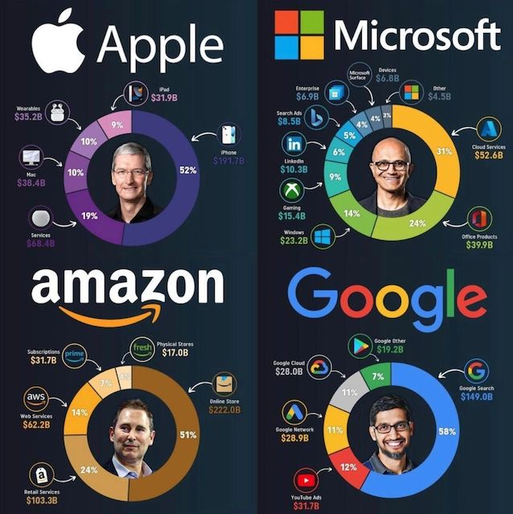

A company's DNA is the most important thing to understand as early as possible. It's not always easy for private or unknown companies to figure out, and you may have to be inside the factory to see how the sausage is made. Regardless, it will shape everything from the smallest detailed decision to the highest strategic one. It's often confused with culture but the DNA creates most of the culture, not the other way around.
I've seen this principle apply time and time again. I've been fighting company's DNA to some extent in pretty much every company I worked for. It gets particularly difficult when the executive team is saying they are committed to a direction but their DNA is acting against it. Now this is super common in time of hardship. The team want to shake things up, but won't let go of their old ways, not realizing why. It's hard as well to cover because at the highest level, most people believe their success is due to their impeccable professionalism, their ice code rational and whatever makes them feel that everything they have is earned and luck had no play in it.
This DNA won't stop at this level though. It will express itself from every level of the company because many, if not most of the staff, is here because of that DNA - even if implicitly. It usually translates in symptomatic expression of the DNA. For instance, people will want to work at the company because it has "a strong office culture" which in fact is only the expression of the micromanaging DNA the exec team is pushing. There are plenty of valid reasons to have a full in-office workforce beyond micromanagement. That's not the point here. The point is that the micromanaging DNA behind the office culture will express itself much further than the office culture. And you now may have to push against a secondary 'echo chamber' of that DNA with the work force defending it.
The company's DNA is the core principle that the team will always fall back to. It will be the core interests they have; the rules they obey by all means; the elements that ultimately defines their identity. It's not always written in black and white. It's not always aligned with the advertised values. Most of the time, the values are an aspiration. A direction the team would want the DNA to be at.
It comes first and foremost from the founders. If the founding team is non-technical, it can create a DNA of business first. This can translate into a DNA that diminishes the fine print difficulties of product and engineering - most typically the schedule slipping - and ultimately add frictions to everything while it becomes very difficult to explain the situation up. On the other side, a technical founder can bring to the table a "I know it all" attitude and a strong preference for a given product line or market shaping the DNA of the company towards consumer electronics for instance and preventing a differentiation effort towards enterprise (or vice versa).
The next echo chamber is the executive team. They will most likely carefully mold themselves to please the founders through meticulous upward management. Very, very often, the executives will aggressively, yet subtly nudge the DNA towards where the company can be the most fruitful. It may work (Steve Jobs convinced to do iPod on Windows) or it may fail. It's not uncommon to see exec move on to their next venture when they fail at this task. I've been there and I know many who have been there as well.
Then it is quickly followed as an echo chamber by what the company does, where it became successful. You'll hear conversation saying "We are X because product Y is our most successful one". For instance, I heard many times regarding Apple: "We are a mobile company because all our best-selling devices are mobile devices." And it's a truthful statement, because what you sell heavily defines your identity and your DNA.
Now you've probably seen this circulating on social media:

Take a second and think about what's the DNA of each of these companies? Are their side businesses defining their DNA or just side-gigs?
Unfortunately for the idealist, a company is extremely unlikely to be able to develop multiple DNAs. This a broader topic I don't want to cover here, but conglomerates and acquisitions with retained autonomy (think of YouTube inside Alphabet) are valid paths towards it. On the other side, when you try to force two DNAs to merge, because it's unlikely to work, you can find strong clashes - like the recently reported issues between Slack and Salesforce.
Understanding the DNA and embracing its strength and limitation is critical as you will see that an important principle here is to constantly navigate just outside the boundaries of the possible. You want to be able to push everything forward in a realistic way, never delusional.